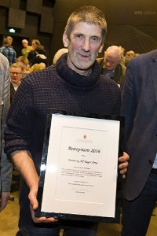

Lovise og Håkon sin slekt og familie
Lovise f. Eggan og Håkon Wahl
Personside 2 805
Erik Isaksen Schilliås
M, #70101, f. 1753, d. 1830
Familie: Dorthea Maria Andreasdatter Clausen (f. 1791, d. 25 januar 1869)
| Datter | Beret Eriksdatter Schilliås+ (f. 14 desember 1818, d. 4 april 1898) |
Biografi
Erik Isaksen Schilliås ble født i 1753 på/i Homstad, Overhalla, Nord-Trøndelag. Han giftet seg med Dorthea Maria Andreasdatter Clausen den 25 juni 1818. Han døde i 1830 på/i Spjøtneset, Vemundvik, Namsos, Nord-Trøndelag.
Erik Isaksen Schilliås was also known as Erik Spjøtnes. Han kjøpte den 27 juni 1804 Spjøtneset, Vemundvik, Namsos, Nord-Trøndelag.
| Sist redigert | 5 januar 2013 00:00:00 |
Johannes Edvard Svendsen Lund
M, #70102, f. 6 juli 1882, d. 20 november 1955
Foreldre
| Far | Svein Laurits Johannessen Lund (f. 27 august 1854, d. 27 desember 1926) |
| Mor | Petra Marie Johannesdatter Barlien (f. 15 mai 1862, d. 11 februar 1947) |
Familie: Anne Kristiansdatter Løe (f. 3 oktober 1890, d. 26 mars 1960)
| Sønn | Svein Lund (f. 28 januar 1918, d. 19 september 1976) |
| Sønn | Karl Johan Lund (f. 8 april 1920, d. 14 februar 1997) |
| Sønn | Per Lund+ (f. 14 januar 1923, d. 18 juni 1994) |
| Sønn | Ivar Lund (f. 7 mars 1924, d. 1 november 1944) |
| Sønn | Alf Ingvald Lund (f. 20 august 1925, d. 19 november 2012) |
| Sønn | Otto Lund (f. 27 februar 1927, d. 1944) |
| Sønn | Jarle Adolf Lund (f. 24 mai 1929, d. 11 desember 1990) |
| Datter | Gerd Lund (f. 8 november 1930) |
Biografi
Johannes Edvard Svendsen Lund ble født den 6 juli 1882 på/i Overhalla, Nord-Trøndelag. Han giftet seg med Anne Kristiansdatter Løe i 1917. Han døde den 20 november 1955 på/i Overhalla, Nord-Trøndelag. Han ble gravlagt den 2 desember 1985 på/i Ranem kirkegård, Overhalla, Nord-Trøndelag.
Johannes Edvard Svendsen Lund kjøpte i 1946 Nesmoen 32/20, Overhalla, Nord-Trøndelag.
| Sist redigert | 16 juli 2020 00:00:00 |
| Slektskap | 7-menning 3 ganger forskjøvet til Håkon Wahl |
Svein Lund
M, #70103, f. 28 januar 1918, d. 19 september 1976
Foreldre
| Far | Johannes Edvard Svendsen Lund (f. 6 juli 1882, d. 20 november 1955) |
| Mor | Anne Kristiansdatter Løe (f. 3 oktober 1890, d. 26 mars 1960) |
Biografi
Svein Lund ble født den 28 januar 1918 på/i Overhalla, Nord-Trøndelag. Han giftet seg med Mary. Han døde den 19 september 1976 på/i Mosjøen, Vefsn, Nordland. Han ble gravlagt den 24 september 1976 på/i Mosjøen kirkegård, Vefsn, Nordland.
| Sist redigert | 16 juli 2020 00:00:00 |
| Slektskap | 8-menning 2 ganger forskjøvet til Håkon Wahl |
Alf Roger Arnø
M, #70109, f. 17 januar 1955, d. 19 desember 2018
Foreldre
| Far | Arthur Arnø (f. 29 mars 1922, d. 11 november 2012) |
| Mor | Birgit Marianne Lorentzen (f. 11 september 1923, d. 30 juni 2014) |
Familie: Maren Hagan
| Sønn | Aleksander Arnø+ |
| Datter | Maja Arnø |
| Datter | Dina Arnø+ |
{kind=link}

Alf Ragnar Arnø
Biografi
Alf Roger Arnø ble født den 17 januar 1955. Han giftet seg med Maren Hagan. Han døde den 19 desember 2018. Han ble gravlagt den 8 januar 2019 på/i Lundring kirkegård, Nærøy, Nord-Trøndelag.

| Sist redigert | 18 august 2024 22:18:28 |
Birgit Marianne Lorentzen
K, #70110, f. 11 september 1923, d. 30 juni 2014
Foreldre
| Far | Richard Ferdinand Kornelius Lorentzen (f. 12 januar 1887, d. 21 august 1948) |
| Mor | Dina Kristoffersen Evjen (f. 22 april 1883, d. 30 mars 1979) |
Familie: Arthur Arnø (f. 29 mars 1922, d. 11 november 2012)
| Sønn | Alf Roger Arnø+ (f. 17 januar 1955, d. 19 desember 2018) |
Biografi
Birgit Marianne Lorentzen ble født den 11 september 1923 på/i Borge, Vestvågøy, Nordland. Hun giftet seg med Arthur Arnø. Hun døde den 30 juni 2014 på/i Sykehuset Namsos, Namsos, Nord-Trøndelag. Hun ble gravlagt den 4 juli 2014 på/i Lundring kirkegård, Nærøy, Nord-Trøndelag.
Birgit Marianne Lorentzen was also known as Arnø.
| Sist redigert | 8 mars 2026 08:01:18 |
Richard Ferdinand Kornelius Lorentzen
M, #70111, f. 12 januar 1887, d. 21 august 1948
Foreldre
| Far | Lorents Jacobsen (f. omtrent 1860) |
| Mor | Jetta Karlsdatter (f. 1863) |
Familie: Dina Kristoffersen Evjen (f. 22 april 1883, d. 30 mars 1979)
| Datter | Birgit Marianne Lorentzen+ (f. 11 september 1923, d. 30 juni 2014) |
Biografi
Richard Ferdinand Kornelius Lorentzen ble født u.e. den 12 januar 1887 på/i Borge, Lofoten. Han giftet seg med Dina Kristoffersen Evjen. Han døde den 21 august 1948 på/i Vestvågøy, Nordland. Han ble gravlagt på/i Borg kirkegård, Vestvågøy, Nordland.
| Sist redigert | 31 januar 2026 23:24:06 |
Dina Kristoffersen Evjen
K, #70112, f. 22 april 1883, d. 30 mars 1979
Familie: Richard Ferdinand Kornelius Lorentzen (f. 12 januar 1887, d. 21 august 1948)
| Datter | Birgit Marianne Lorentzen+ (f. 11 september 1923, d. 30 juni 2014) |
Biografi
Dina Kristoffersen Evjen ble født den 22 april 1883 på/i Borge, Vestvågøy, Nordland. Hun giftet seg med Richard Ferdinand Kornelius Lorentzen. Hun døde den 30 mars 1979 på/i Vestvågøy, Nordland. Hun ble gravlagt på/i Borg kirkegård, Vestvågøy, Nordland.
Dina Kristoffersen Evjen was also known as Dina Lorentzen.
| Sist redigert | 6 januar 2013 00:00:00 |
Jetta Karlsdatter
K, #70113, f. 1863
Familie: Lorents Jacobsen (f. omtrent 1860)
| Sønn | Richard Ferdinand Kornelius Lorentzen+ (f. 12 januar 1887, d. 21 august 1948) |
Biografi
Jetta Karlsdatter ble født i 1863.
| Sist redigert | 6 januar 2013 00:00:00 |
Lorents Jacobsen
M, #70114, f. omtrent 1860
Familie: Jetta Karlsdatter (f. 1863)
| Sønn | Richard Ferdinand Kornelius Lorentzen+ (f. 12 januar 1887, d. 21 august 1948) |
Biografi
Lorents Jacobsen ble født omtrent 1860.
Lorents Jacobsen bodde i 1887 på/i Meløy, Øksnes, Nordland.
| Sist redigert | 6 januar 2013 00:00:00 |
Alfred Theodor Andreassen Arnø
M, #70115, f. 1 mai 1886, d. 13 mai 1970
Foreldre
| Far | Andreas Sivertsen (f. 8 april 1851, d. 6 november 1918) |
| Mor | Elen Jørgine Rasmusdatter (f. 20 september 1855, d. 1946) |
Familie: Agnes Olsdatter Sandnes (f. 7 juni 1899, d. 9 desember 1950)
| Sønn | Arthur Arnø+ (f. 29 mars 1922, d. 11 november 2012) |
Biografi
Alfred Theodor Andreassen Arnø ble født den 1 mai 1886. Han giftet seg med Agnes Olsdatter Sandnes den 8 januar 1921 på/i Nærøy, Nord-Trøndelag. Han døde den 13 mai 1970.
Alfred Theodor Andreassen Arnø ble konfirmert den 12 august 1900 på/i Nærøy, Nord-Trøndelag.
| Sist redigert | 9 april 2021 00:00:00 |
Agnes Olsdatter Sandnes
K, #70116, f. 7 juni 1899, d. 9 desember 1950
Foreldre
| Far | Ole Johannes Olsen (f. 11 februar 1858, d. 6 mars 1947) |
| Mor | Lovise Henriette Olsdatter (f. 3 september 1860) |
Familie: Alfred Theodor Andreassen Arnø (f. 1 mai 1886, d. 13 mai 1970)
| Sønn | Arthur Arnø+ (f. 29 mars 1922, d. 11 november 2012) |
Biografi
Agnes Olsdatter Sandnes ble født den 7 juni 1899 på/i Sandnes, Nærøy, Nord-Trøndelag. Hun giftet seg med Alfred Theodor Andreassen Arnø den 8 januar 1921 på/i Nærøy, Nord-Trøndelag. Hun døde den 9 desember 1950 på/i Nærøy, Nord-Trøndelag.
Agnes Olsdatter Sandnes was also known as Agnes Arnø.
| Sist redigert | 9 april 2021 00:00:00 |
Birgit Asrun Tanem
K, #70122, f. 23 august 1924, d. 2 januar 2013
Familie: Oddvar Kristian Ovesen (f. 26 februar 1920, d. 13 november 2009)
| Sønn | Tor Egil Ovesen+ |
Biografi
Birgit Asrun Tanem ble født den 23 august 1924. Hun døde den 2 januar 2013 på/i Namdalseid, Nord-Trøndelag. Hun ble gravlagt den 11 januar 2013 på/i Namdalseid kirkegård, Namdalseid, Nord-Trøndelag.
Birgit Asrun Tanem was also known as Birgit Asrun Ovesen.
| Sist redigert | 26 februar 2021 00:00:00 |